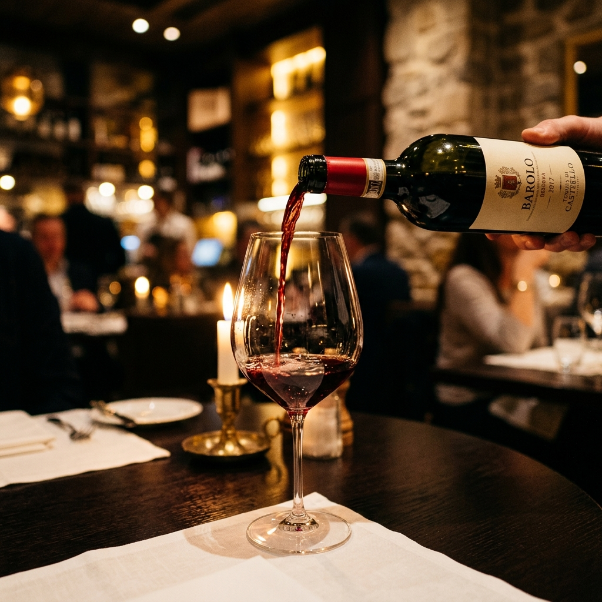

ワインリスト

ソムリエのご紹介
「ワインは料理を完成させる最後のピースです。お客様の好みやその日の気分に合わせて、最高の1杯をご提案いたします。イタリア全土から厳選したワインとの出会いをお楽しみください。」
ソムリエ 高橋 涼
グラス ¥900〜 / ボトル ¥4,500〜
ソムリエおすすめのペアリング
お肉の濃厚な旨味を持つボロネーゼソース。
サンジョヴェーゼ特有の酸味と果実味が、ソースのコクをすっきりとさせ、絶妙なハーモニーを生み出します。
魚介の出汁とトマト、オリーブの旨味が詰まった一皿。
海風を感じるミネラル感と爽やかな柑橘の香りが、魚介の風味を最大限に引き立てます。
和牛の脂の甘みとバルサミコの酸味が特徴。
「ワインの王」と呼ばれる力強いタンニンと複雑な香りが、和牛の力強い味わいを受け止めます。